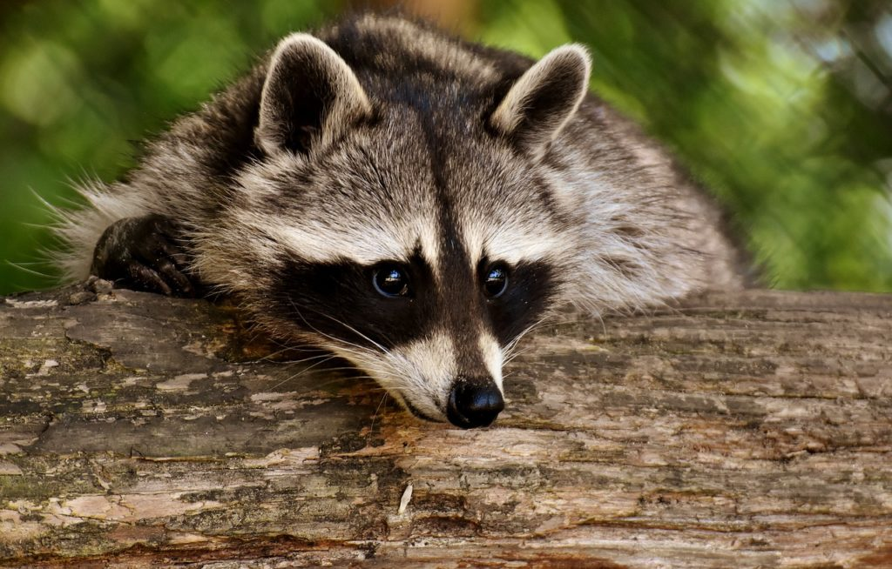
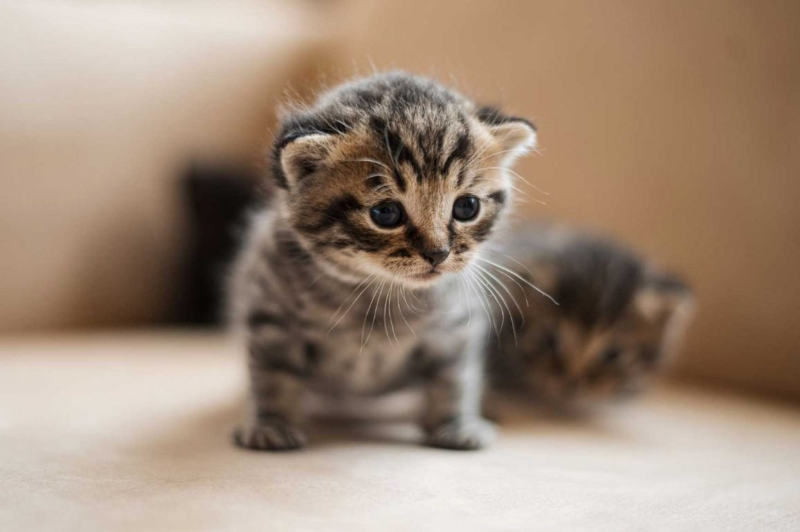
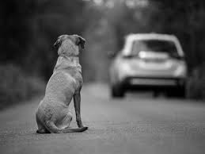
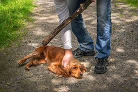
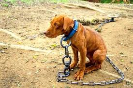
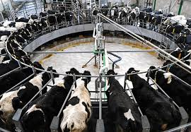

Dejar animales en la vía pública o desatenderlos por periodos prolongados.

La violencia física animal abarca golpes, tortura, mutilaciones, abandono y negligencia, causando severas secuelas físicas y conductuales, incluso la muerte.

Es una de las formas más comunes, que incluye no proporcionar comida, agua, refugio adecuado, atención veterinaria o protección contra las inclemencias del clima.

La explotación animal es el uso de animales no humanos por parte de los seres humanos para beneficio personal o económico, tratándolos como mercancías y a menudo causándoles sufrimiento físico y psicológico.